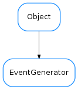

EventGenerator¶

-
class
EventGenerator(name, events_active=True)[source]¶ Bases:
taurus.core.util.object.ObjectBase class capable of firing events
-
WaitTimeout= 0.1¶
-
getEventsActive()[source]¶ Determines is events are active :return: True if events are active or False otherwise :rtype: bool
-
isSubscribed(cb, data=None)[source]¶ Determines if the given callback is registered for this event.
Parameters: Returns: True if callback is registered or False otherwise
Return type:
-
setEventsActive(events_active)[source]¶ (De)activates events on this event generator.
Parameters: events_active (bool) – activate/deactivate events
-
subscribeEvent(cb, data=None, with_first_event=True)[source]¶ Subscribes to the event
Parameters: - cb (callable) – a callable object
- data (boolean) – extra data to send each time an event is triggered on the given callback. Default is None.
- with_first_event – whether call the callback with the first event value (the most recent value) during the subscription process. Default is True.
-
unsubscribeEvent(cb, data=None)[source]¶ Unsubscribes the given callback from the event. If the callback is not a listener for this event a debug message is generated an nothing happens.
Parameters:
-